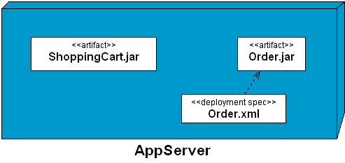

.
.The IDE adds the Deployment Specification to the diagram.
You can use the IDE's UML Modeling feature to add Deployment Specifications. Users can associate a deployment specification and artifact with a dependency relationship.
To add a deployment specification:
.